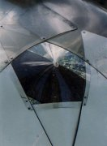

Research Dome 18 |
| When in 1989 I decided to make another dome my wife insisted I make it of good materials and a sound design. Since my resources and space were limited, a few hundred dollars and my mother's yard, I made a modest 18' 2v plydome much like the hemisphere I had made in 1981, except that I understood geodesic geometry and its application to plydomes much better, and made a rounder dome which went up much more quickly. I still have this one. It has undergone several incarnations. It began as a simple plywood dome with translucent fiberglass windows, and evolved into a mostly polycarbonate structure with pointed polycarbonate windows and white aluminum over the plywood parts. Today it is plywood with the pointed windows: I have retained the most successful features and raised it off the ground to prevent deterioration. I also moved it out of my mother's yard in 1997 and set it up in my own yard, now that I have one. |
| Dome first completed in 1989 with fiberglass windows. | On cover of DOME magazine Spring 1990. Four plywood sheets on roof have been replaced with 1/8" polycarbonate sheets. | Clad in aluminum sheets. Fiberglass windows have been replaced with pointed polycarbonate units. |
 |
||
| With aluminum ventilator, 1992. | ||
| Blizzard of '93 buried dome in snow. | Most recent incarnation of dome. Polycarbonate 4x8 sheets removed from roof, aluminum removed from plywood, wooden ventilator, dome raised off ground. New door. |